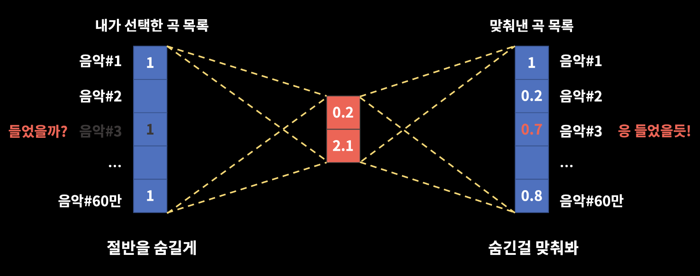
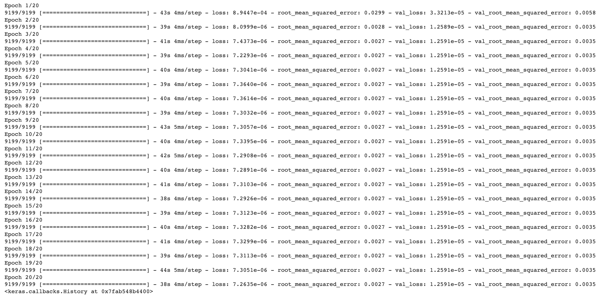
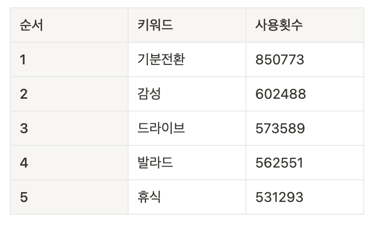

플레이리스트 속 태그를 이용한 음악 추천 프로젝트
INTRO
기획배경 / 프로젝트 목표 / DATA / 가설 / 개념정리
Deep Learning Model
EDA / Model
결론
결론 / 프로젝트 회고 / 참고 자료
프로젝트 분석 코드
INTRO
1. 기획배경
- 사람들의 취향이 다양해지면서 기업들은 개인화된 소비자들의 욕구를 충족시키기 위해 추천시스템을 사용하고 있습니다.
- 추천 시스템은 사람들이 좋아하는 상품을 기반으로 유사한 특징을 가진 상품을 추천하거나 비슷한 취향을 가진 소비자들이 좋아한 상품을 제안해줍니다.
- 개인화된 추천 시스템은 Netfilx, TVING, YouTube, Spotify, Melon, VIBE, Musinsa, ZigZag 등의 다양한 회사에서 이용하고 있습니다.
2. 프로젝트 목표
💡 프로젝트 목표
- 소비자들의 선호도를 기반으로 소비자들이 키워드를 입력했을 때, 듣고 싶을 것이라 예상되는 음악을 추천해줍니다.
💡 프로젝트 기대 효과
- 기업은 추천시스템을 통해 다음과 같은 기대효과를 얻을 수 있습니다.
- 기업은 고객에게 맞춤 서비스를 제공하여 의사결정에 들어가는 시간과 노력을 감소시켜서 긍정적인 구매 경험을 전달할 수 있습니다.
- 기업은 추천시스템을 통해 개인에게 맞춤형 마케팅을 제공하여 마케팅에 들어가는 비용을 줄일 수 있습니다.
3. 데이터
💡 멜론 플레이리스트 데이터(Link)
- 사용자들이 만든 플레이리스트와 플레이리스트에 속해있는 음악 및 키워드, 플레이리스트에 대한 소비자들의 선호도를 포함한 데이터.
💡 데이터 선정 이유
- 음악 분야의 경우, 영상 및 OTT 분야와 마찬가지로 추천시스템을 활발하게 사용합니다.
- 음악을 통한 추천 시스템을 구축한다면 이후 다양한 분야에서도 추천 시스템을 적용할 수 있을 것이라 예상됩니다.
4. 가설
- 키워드(태그, 플레이리스트 제목)와 음악 간의 상관관계가 높으면 사람들의 선호도가 높을 것입니다.
- 키워드(음악)을 통해 유사도가 높은 음악(키워드)를 사용자에게 추천해줄 수 있을 것입니다.
- 키워드를 조합하면 사람들이 좋아하는 음악들을 모아서 플레이리스트를 만들 수 있을 것입니다.
5. 개념정리
💡 추천 시스템
- 사용자가 관심을 가질만한 콘텐츠(상품, 영화, 이미지, 뉴스 등)를 추천하는 것으로 사용자의 선호도 및 과거 행동을 토대로 사용자에 적합한 콘텐츠를 제공하는 것
- 콘텐츠 기반 추천 시스템, 협업 필터링, 딥러닝 기반 추천 시스템 등이 존재
💡 AutoEncoder
- 입력 데이터를 저차원의 벡터로 압축한 뒤 원래 크기의 데이터로 복원하는 신경망(Encoder-Decoder)
- Denoising AutoEncoder의 경우, 일부 데이터에 noise를 추가하기 때문에 기본 AutoEncoder모델보다 성능이 우수함
- Denoising AutoEncoder를 통해 복원된 데이터를 사용하면 소비자가 키워드를 입력했을 때, 좋아할만한 음악을 추천하는 것이 가능
Deep Learning Model
1. EDA
- 플레이리스트에 있는 tags를 개별 tag로 나누어 저장합니다.
- 플레이리스트에 있는 songs를 개별 song으로 나누어 저장합니다.
- song, key_word, like_cnt column을 사용하여 학습에 필요한 피벗테이블을 생성합니다.
- 피벗테이블 값에 대해 최대-최소 정규화를 진행합니다.
2. Model
💡 모델 학습
- Denoise AutoEncoder 모델에 학습데이터를 사용하여 학습을 진행하였습니다.
- 테스트 데이터를 AutoEncoder에 입력하여 decoder를 통해 나온 값으로 가려진 값(키워드, 노래)를 예측할 수 있습니다.

💡 모델 학습 결과
- 노이즈가 추가된 학습데이터를 X 데이터, 노이즈를 추가하기 전의 학습데이터를 y 데이터로 사용하여 모델을 학습한 결과입니다.

EPOCH 3 = 훈련데이터 RMSE : 0.0027 / 검증데이터 RMSE : 0.0035
결론
1. 결론
- 태그에 사용된 단어 빈도를 통해 노래 추천을 받을 키워드 선정하였습니다.
- 플레이리스트에 가장 많이 사용된 태그(기분전환)를 기준으로 5곡의 음악을 추천하면 다음과 같습니다.
- Demi Lovato - Sorry Not Sorry
- Ne-Yo - Another Love Song
- Miranda Glory - Blue Eyes(feat. Matty Owens)
- Dornik - God Knows
- Quest - Walking On The Moon
- 추천 시스템을 이용하면 사용자에 맞는 제품 및 서비스를 제공할 수 있기 때문에 사용자들이 제품 및 서비스를 찾기 위해 들이는 시간을 줄일 수 있습니다. 이를 통해 기업은 사용자에게 긍정적인 브랜드 경험을 전달할 수 있습니다.

2. 프로젝트 회고
💡 긍정적인 부분
- 프로젝트를 통해 추천 시스템에 대해 공부하였고, AutoEncoder 모델을 사용하여 추천 시스템을 제작하였습니다.
- 프로젝트에서 만든 추천 시스템을 기반으로 다른 도메인의 제품 및 서비스에서 사용할 수 있는 추천 시스템을 제작할 수 있습니다.
💡 한계점
- Denoise AutoEncoder 모델만 만들어서 성능의 확인이 어려웠습니다.
- 모델의 결과를 통해 만든 플레이리스트를 제작하지 않아 첫번째 가설(키워드와 음악 간의 상관관계가 높으면 사람들의 선호도가 높을 것이다)에 대한 검증을 하지 못했습니다.
💡 개선 사항
- 추천 시스템에 대한 다른 모델을 사용하여 모델 성능에 대한 검증 필요합니다.